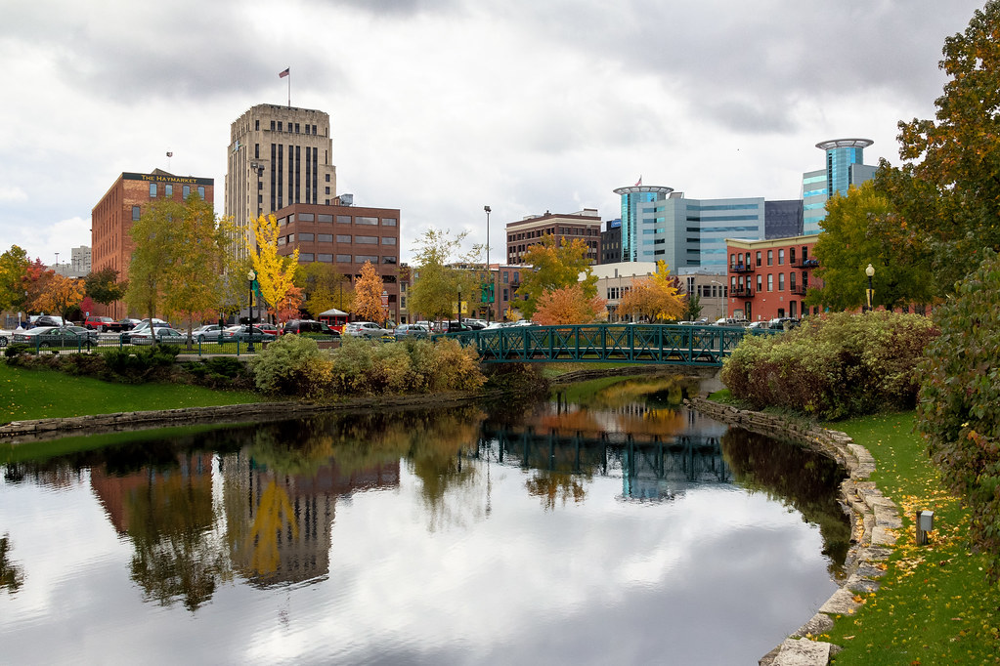

About Kalamazoo
Kalamazoo is a vibrant city in southwestern Michigan, known for its rich history, educational institutions, and strong economy. It's home to Western Michigan University and a hub for healthcare and industry.
The city is famous for its cultural institutions, including theaters, museums, and a strong craft beer scene. Kalamazoo has a diverse population and continues to grow as a regional center for education and business.
Key Facts About Kalamazoo
- Population: 76,120 (as of 2020 Census)
- Year Incorporated: 1836
- Region: Southwestern Michigan
- Classification: Urban
- Average Income Level: Kalamazoo's average income is higher than Michigan's average due to the presence of major employers in healthcare, education, and industry.